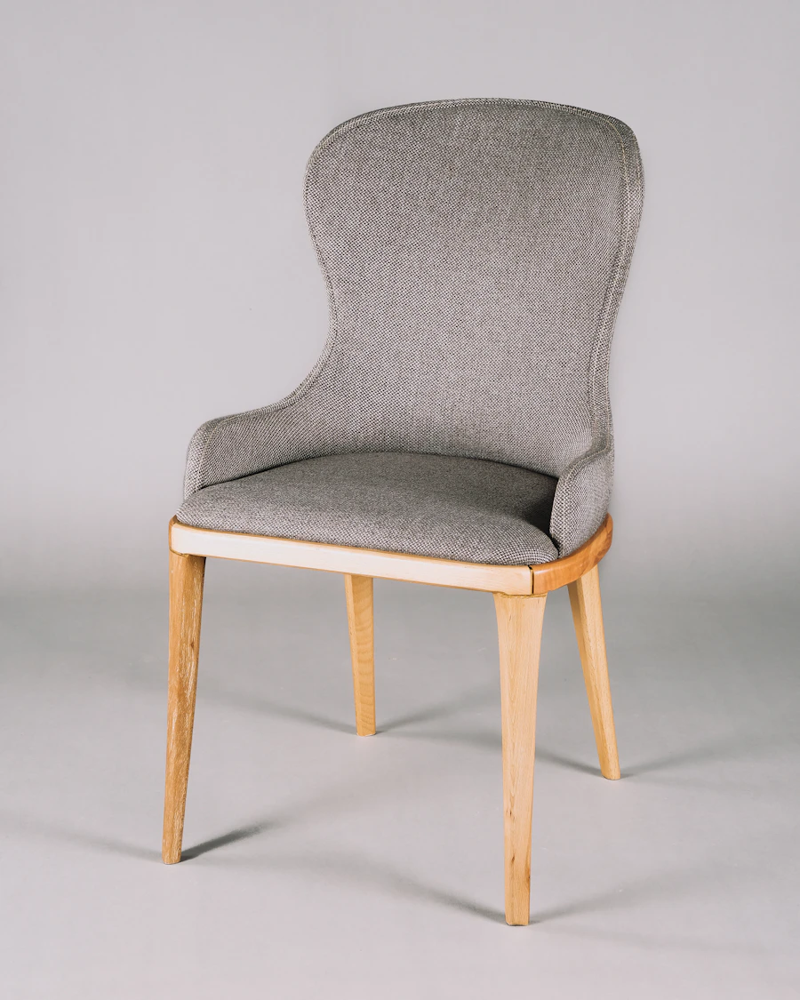

SONIDO / CULTURA / SESIONESNOISOMEFrecuencias independientes.
Explorar Un universo para escuchar.
Dirección visual, sesiones y objetos de colección. Una experiencia musical con reproductor y selección de productos.
Código con propósito.
Transformo ideas en experiencias digitales.
Con identidad, intención y una base que funciona.
Identidades distintas. Experiencias que se pueden recorrer, escuchar y probar. Cinco proyectos conceptuales de diseño y desarrollo.
Dirección visual, sesiones y objetos de colección. Una experiencia musical con reproductor y selección de productos.

Catálogo fotográfico, filtros y carrito. Una tienda editorial que pone el producto en primer plano.
Agenda semanal con reservas, filtros y detección de horarios cruzados. Pensada para el trabajo de un equipo.
Cotizaciones claras, cálculos consistentes y documentos listos para imprimir. Del presupuesto al acuerdo.
Un portal con servicios fáciles de encontrar, búsqueda por categoría y edición de contenidos.
Cada decisión visual tiene una función. Cada interacción, una razón para estar.
Webs con una identidad que se reconoce. Composición, tipografía, movimiento y una navegación que invita a quedarse.
Dirección visual · Responsive · Desarrollo webConvierto tareas repetitivas en herramientas útiles: agendas, cotizadores, paneles y flujos de trabajo con reglas claras.
Automatización · Validaciones · Gestión de datosLa experiencia en soporte N2 aporta una mirada práctica al desarrollo: diagnosticar, resolver y mantener los sistemas en funcionamiento.
Windows · Microsoft 365 · Aplicaciones corporativasSoy Analista Programador y trabajo en soporte TI N2. Me interesa el lugar donde el diseño se encuentra con lo que las personas necesitan hacer.
Diseño y desarrollo experiencias web con atención al detalle, sin perder de vista cómo se usan y cómo se mantienen.
Explorar mi códigoCuéntame qué tienes en mente.
Encontraremos una forma de hacerlo realidad.